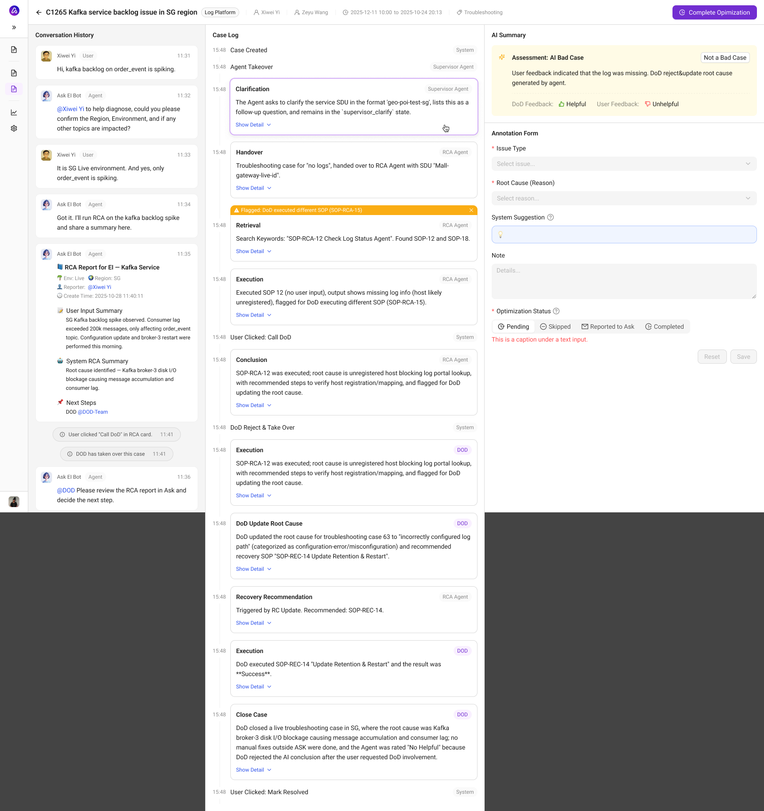
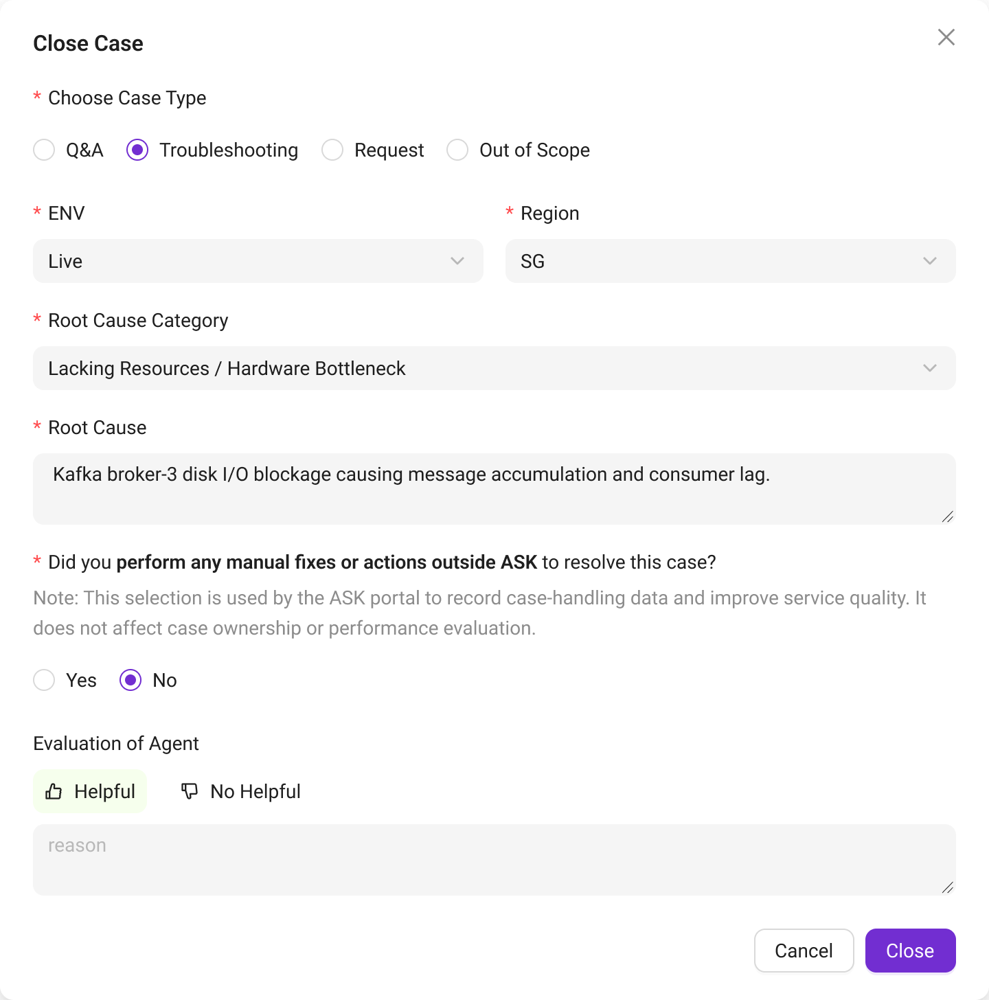
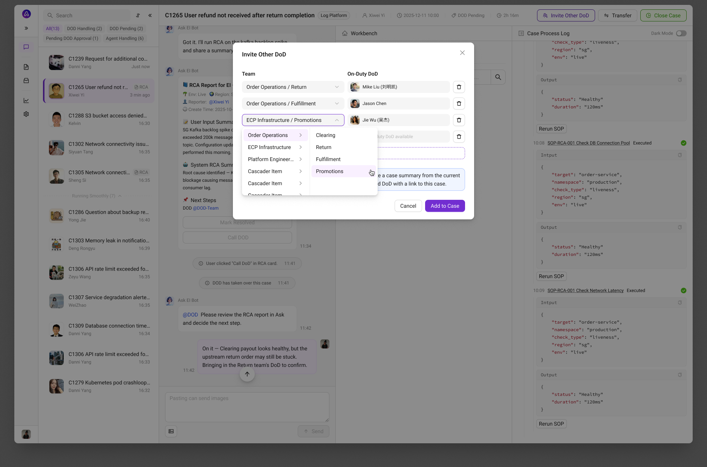
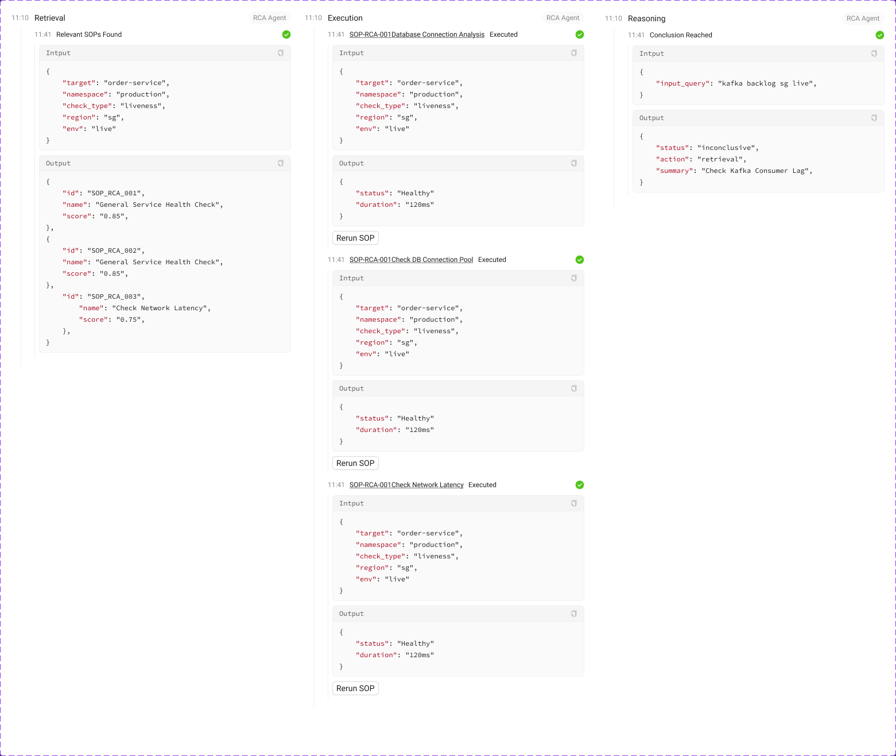
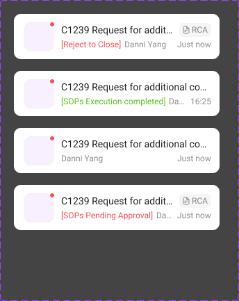
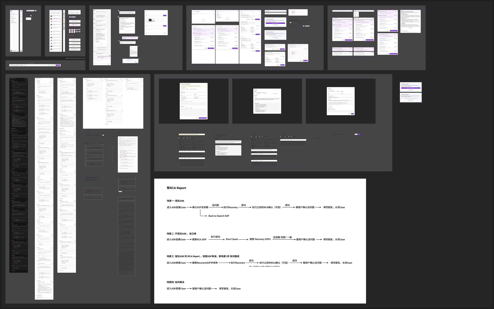

01 / 目标与完整任务
从一线值班工作出发，组织人与 AI 的协作。
值班工作包含受理问题、补齐信息、判断原因、执行恢复和记录结果。Ask 希望让 AI 逐步承接其中的分析与处理；专家仍需要核对判断、批准具体操作，并在必要时接管。我的产品设计从角色、状态和责任开始，再确定页面与模块如何配合。
一次值班任务中的责任交接
- 01
受理与补充
提问者描述现场，AI 收集并组织上下文。
- 02
诊断与建议
AI 提供分析和处理路径，专家核对前提。
- 03
授权或纠正
分别判断根因、操作方案及执行参数。
- 04
执行或接管
允许 AI 继续，或由专家接续已有过程。
- 05
结单与复盘
记录实际解决方式，把结果带回完整案例。
- 对话区 · 保留问题现场
- 汇集用户补充、诊断报告和人员介入信息，让处理者知道问题如何发展。
- Workbench · 集中做判断
- 在诊断结论、SOP 选择与参数配置之间推进任务；当前阶段决定下一步可用动作。
- Case Process Log · 核查过程
- 保留检索、分析摘要和执行的输入输出、时间与结果，便于接管时快速补齐上下文。
从正在处理的案例，延伸到产品的支持系统
- 01
Active Cases
多案例切换、状态与未读提醒。
- 02
SOP Center
沉淀指导文档和可执行处理流程。
- 03
Team Management
组织团队、成员、Agent 与值班支持配置。
- 04
Case Management
回看完整过程，标注值得改进的案例。
02 / 授权、纠正与接管
人对 AI 的信任，要落实到每一个具体动作。
诊断正确，并不意味着推荐的恢复操作就适合当前现场。把所有确认压缩成一个“同意”，会隐藏真正的决策。我的设计让工程师能够在保留有效信息的同时，改变后续路径。
三种判断 · 三条可以继续的处理路径
对照三种处理方式：纠正诊断或更换方案时，保留已有上下文，继续推进处理。
- 需要执行时
- 审批面向具体 SOP 和参数，而非笼统批准整个 AI 处理过程。
- 需要人接手时
- 保留当前对话、处理阶段与过程记录，让控制权切换有连续的上下文。
03 / 结单与复盘
处理结束后，还要知道：问题究竟是怎样解决的。
处理现场需要快速推进，事后复盘则需要逐步核查。两种任务共享案例信息，但页面重点不同：前者突出当前动作，后者把历史对话、事件与改进标注放在一起。
从现场结单，到案例复盘
对照整个处理过程
在同一视图里核查对话、事件、AI Summary 与专家标注。
Ask Case Management · 复盘与标注方案

补全实际解决方式
结单时补充最终根因、站外操作和 Agent 反馈。
Ask 1.0 · 结单反馈

跨专业协作的延伸
会诊探索中，邀请专家进入同一案例，接续已有上下文。
Ask · 会诊模式探索稿

Case Management 与会诊展示后续设计方向；会诊为探索稿。示例数据不代表线上效果。
04 / SOP 与团队配置
AI 的操作能力，需要可维护的业务资产。
能够触发自动执行的工作流，与需要专家照着完成的操作指导，不能共享一套含糊的执行承诺。资产中心先把这种区别说清楚，工作台再据此给出不同动作。
资产如何进入任务 · 总览与组件对照
一边是维护资产的产品界面，一边是工作台中消费资产的业务组件。
展开：资产与团队的组织规则
- 生命周期
- SOP 的草稿、运行、退役状态对应不同可用操作，启停和删除也需要各自的约束。
- 团队与支持
- 团队层级、成员角色、Agent 和值班支持配置，共同决定问题由谁接续处理。
- 类型与视图
- 指导 / 执行描述任务类别，Form / JSON 描述参数展示方式；两者是不同的设计维度。
05 / AI 设计与专家验证
用可运行的完整方案，让产品定义与专家验证相互推进。
接手时，需求分散在多位 PM 手中，核心流程尚未形成。我边沟通边画低保真框架，补齐模块之间的信息与任务关系，再用 Figma Make 形成可运行、可交互的完整高保真方案。设计的难点在于让整个产品连贯工作，而不只是生成单张界面。
将用户、主流程与协作节点组织成可运行方案，用于首次汇报。
打开交互演示 ↗02 / 专家用户访谈带着方案核对真实工作根据汇报反馈调整后，进入专家用户访谈。
打开交互演示 ↗03 / Make 最终版完善复杂交互与状态继续收敛工作台、人工控制和过程记录，为后续设计交付建立基础。
打开交互演示 ↗三个阶段方案记录产品设计的演进，保留当时示例内容；可运行的设计方案不等于生产代码或线上版本。
- 对齐产品结构
- 连接问题受理、诊断、恢复与复盘，让各模块共享清晰的任务和状态。
- 开展专家访谈
- 带着调整后的方案，与专家核对实际处理方式及人工介入节点，继续检查流程是否贴近真实工作。
- 收敛复杂交互
- 完善授权、纠正、接管与记录，再将成熟结构整理为规范设计资产。
项目起点是一段距重要汇报仅三天的首版设计窗口；专家访谈、后续完善与规范交付在之后持续推进。这个时间仅对应首次汇报方案。
06 / 业务结构与组件
让协作规则进入可复用的业务组件。
组件边界来自值班任务中的稳定关系：下一步能做什么、执行需要哪些输入、结果如何核查、哪个案例正在等待人介入。我把这些判断落实为组件类型与状态，再组合成操作面板和处理日志。
组件如何表达过程与责任
过程节点保留核查入口
区分检索、分析摘要与执行；每类节点都有相应输入输出。
Ask 1.0 · Agent 过程节点

事件状态提示待办
用不同状态提示下一次需要介入的事项。
Ask 1.0 · 案例事件

过程节点保留核查入口，事件状态提示下一步介入。
查看完整组件体系与主题连接
Ask 1.0 · 业务组件全貌

- 共享基础 → 产品主题
- 使用 Infra Design System 的基础控件与变量，通过 Ask 尺寸和 Ask-Light 颜色模式承接差异。
- 业务单元 → 复合面板
- SOPConfigCard、OperationGuide 和过程节点组成 ControlPanel、CaseProcessLog 等任务模块。
- 复合面板 → 真实流程
- 接受建议、重新分析、改选恢复、站外解决等路径复用同一套业务结构。
07 / 成果与持续交付
将成熟设计整理为团队可以继续维护的资产。
从 2025 年末开始，我用 Figma Make 制作可运行、可交互的高保真方案，把跨模块流程放在一起讨论和检查。当时生成的实现不能直接接入团队的生产环境，后续仍需要整理设计文件、主题和业务组件，支持持续修改与协作。
形成的设计方案成熟度接近交付标准；生产实现仍需要经过相应的工程适配与验证。
- 产品方案
- 形成可运行、可交互的复杂产品高保真方案，并持续开展评审与专家访谈。
- 人机协作设计
- 区分认可根因、批准执行和选择恢复方式；接管与结单保留完整处理上下文。
- 后续设计基础
- 整理操作面板、SOP 卡片、过程节点与案例事件，通过共用变量和产品主题支持后续修改。
部分界面细节涉及企业内部信息，可在面试交流中结合 Figma 源文件展开介绍。